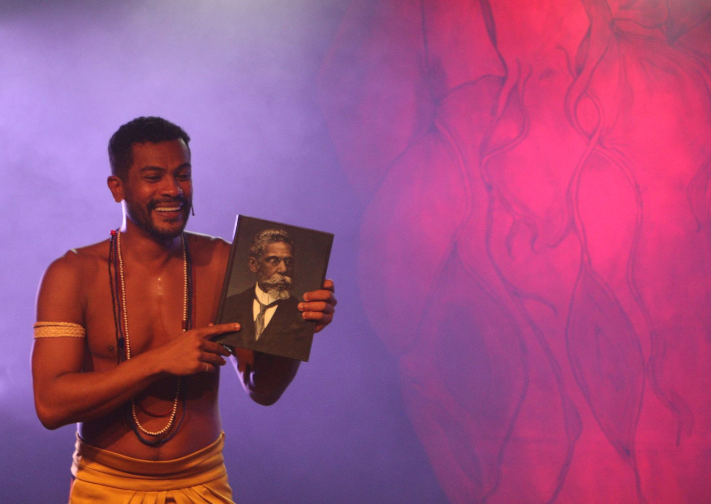

Foto — Camila Santos
Teatro
Samuel de Assis Estreia o Monólogo "E Vocês, Quem São?" no Sesc Santo André
Prepare-se para uma poderosa jornada teatral com Samuel de Assis no monólogo "E Vocês, Quem São?", que estreia este mês no Sesc Santo André. Conhecido por seu d…